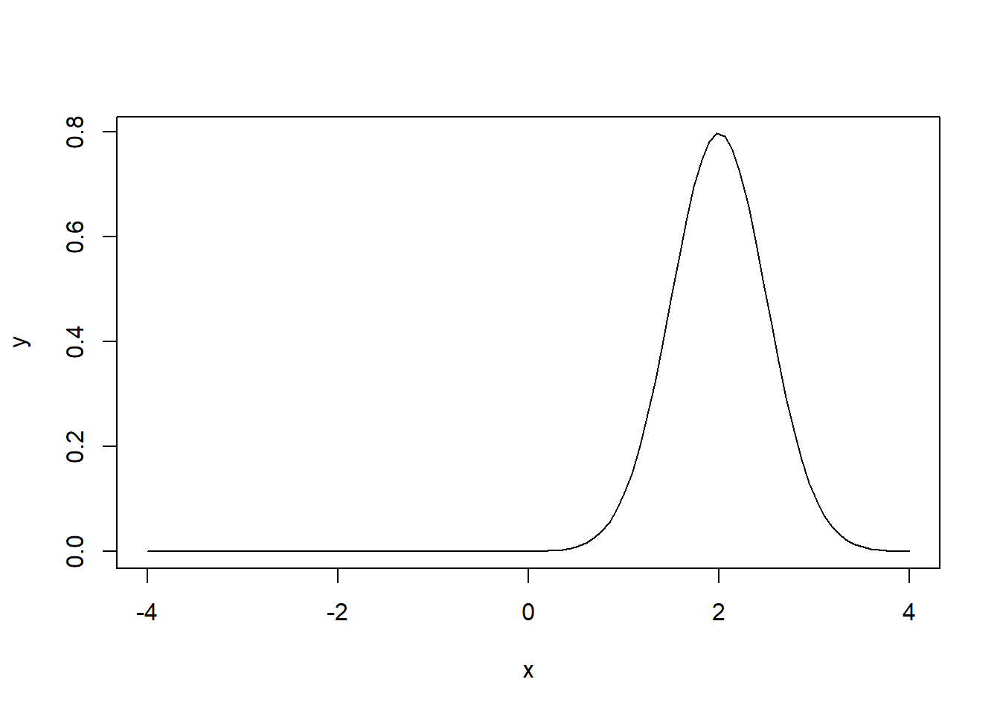
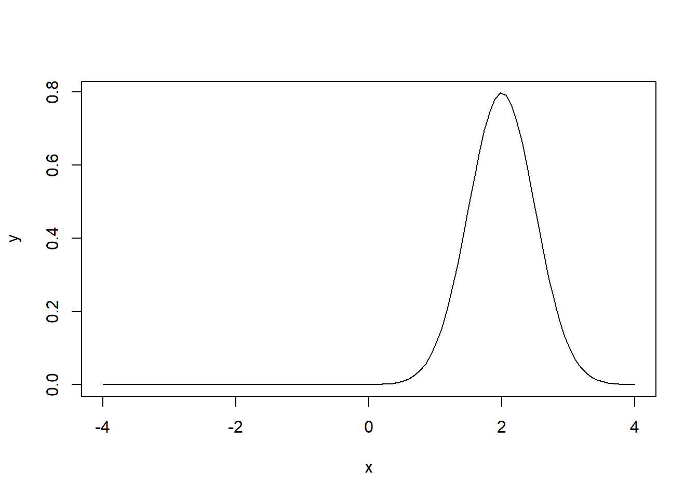
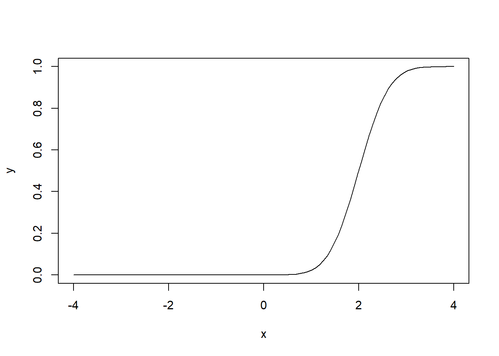

x <- seq(-4, 4, length=100)
y <- dnorm(x, mean=2, sd=0.5)
plot(x, y, type="l")
\[ \require{physics} \require{braket} \]
\[ \newcommand{\dl}[1]{{\hspace{#1mu}\mathrm d}} \newcommand{\me}{{\mathrm e}} \]
\[ \newcommand{\Exp}{\operatorname{E}} \newcommand{\Var}{\operatorname{Var}} \newcommand{\Mode}{\operatorname{mode}} \]
\[ \newcommand{\pdfbinom}{{\tt binom}} \newcommand{\pdfbeta}{{\tt beta}} \newcommand{\pdfpois}{{\tt poisson}} \newcommand{\pdfgamma}{{\tt gamma}} \newcommand{\pdfnormal}{{\tt norm}} \newcommand{\pdfexp}{{\tt expon}} \]
\[ \newcommand{\distbinom}{\operatorname{B}} \newcommand{\distbeta}{\operatorname{Beta}} \newcommand{\distgamma}{\operatorname{Gamma}} \newcommand{\distexp}{\operatorname{Exp}} \newcommand{\distpois}{\operatorname{Poisson}} \newcommand{\distnormal}{\operatorname{\mathcal N}} \]
Definition 1.1 (Expectation) \[ \Exp\mqty[u(X)] = \int_{-\infty}^{\infty}u(x)f(x)\dl3x. \]
Definition 1.2
Proposition 1.1
Proof. \[ \begin{split} \Exp\mqty[ag(X)+bh(X)]&=\int_{-\infty}^{\infty}\mqty[ag(x)+bh(x)]f(x)\dl3x\\ &=a\int_{-\infty}^{\infty}g(x)f(x)\dl3x+b\int_{-\infty}^{\infty}h(x)f(x)\dl3x\\ &=a\Exp\mqty[g(X)]+b\Exp\mqty[h(X)]. \end{split} \]
\[ \begin{split} \Exp\mqty[(X-\mu)^2]&=\Exp\mqty[\qty(X^2-2\mu X+\mu^2)]=\Exp(X^2)-2\mu\Exp(X)+\Exp(\mu^2)\\ &=\Exp(X^2)-2\mu\mu+\mu^2=\Exp(X^2)-\mu^2. \end{split} \]
R has built-in random variables with different distributions. The naming convention is a prefix d-, p-, q- and r- together with the name of distribution.
d-: density function of the given distribution;p-: cumulative density function of the given distribution;q-: quantile function of the given distribution (which is the inverse of p- function);r-: random sampling from the given distribution.x <- seq(-4, 4, length=100)
y <- dnorm(x, mean=2, sd=0.5)
plot(x, y, type="l")
x <- seq(-4, 4, length=100)
y <- pnorm(x, mean=2, sd=0.5)
plot(x, y, type="l")
qnorm(0)
#> [1] -Inf
qnorm(0.5)
#> [1] 0
qnorm(1)
#> [1] Infrnorm(10)
#> [1] -0.60831201 -0.26796877 -1.98091217 0.59579756 -1.41191930 0.42077236
#> [7] -1.62807633 0.01989833 -1.00843412 0.18417475Definition 1.3 (Random vector) Given a random experiment with a sample space \(\mathcal C\), consider two random variables \(X_1\) and \(X_2\), which assign to each element \(c\) of \(\mathcal C\) one and only one ordered pair of numbers \(X_1(c)=x_1\), \(X_2(c)=x_2\). Then we say that \((X_1, X_2)\) is a random vector. The space of \((X_1, X_2)\) is the set of orderd pairs \(\mathcal D=\set{(x_1, x_2)\mid x_1=X_1(c), x_2=X_2(c), c\in\mathcal C}\).
Definition 1.4 (Joint Cumulative Distribution Function) The joint cumulative distribution function of \((X_1, X_2)\) is defined as follows.
\[ F_{X_1,X_2}(x_1,x_2)=\int_{-\infty}^{x_1}\int_{-\infty}^{x_2}f_{X_1,X_2}(w_1,w_2)\dl3w_1\dl3w_2. \]
Definition 1.5 (Joint probability density function (pdf)) In continuous random vector case, the pdf is defined as
\[
f_{X_1, X_2}(x_1, x_2)=\frac{\partial^2F_{X_1, X_2}(x_1,x_2)}{\partial x_1\partial x_2}.
\]
Definition 1.6 (Marginal pdf) Assume \((X_1, X_2)\) be a continuous random vector. The marginal pdf is \[ f_{X_1}(x_1)=\int_{-\infty}^{\infty}f(x_1, x_2)\dl3x_2. \]
Definition 1.7 (Expectation) Assume that \(Y=g(X_1, X_2)\). Then \[ \Exp(Y)=\int_{-\infty}^{\infty}\int_{-\infty}^{\infty} g(x_1, x_2) f_{X_1, X_2}(x_1,x_2)\dl3x_1\dl3x_2. \]
Definition 1.8 (Conditional probability) The conditional pdf is defined as follows: \[ f_{X_1\mid X_2}(x_1\mid x_2)=\frac{f_{X_1,X_2}(x_1,x_2)}{f_{X_1}(x_1)}=\frac{f_{X_1,X_2}(x_1,x_2)}{\int_{-\infty}^{\infty} f_{X_1,X_2}(x_1,w)\dl3w}, \] and the corresponding conditional probability is defined as \[ \Pr(X_1\in A\mid X_2=x_2)=\int_Af_{X_1\mid X_2}(x_1\mid x_2)\dl3x_1. \] Thus \(f_{X_1\mid X_2}(x_1\mid x_2)\) is a pdf of a random function of \(X_1\).
Theorem 1.1 Let \((X_1, X_2)\) be a random vector such that \(\Var(X_2)\) is finite. \(\Exp(X_2\mid X_1=x_1)\) and \(\Var(X_2\mid X_1=x_1)\) can be seen as random functions of \(X_1\). Then
Under the assumption of two variables \(X\) and \(Y\), when only talking about one variable \(X\) (resp. \(Y\)), we are actually talking about the random variable corresponding to the marginal pdf. The ignoring the other variable part is handled by the integration part.
Proposition 1.2
Proof. \[ \begin{aligned} \Exp\mqty[u(X)]&=\iint u(x)f(x,y)\dl3x\dl3y=\int u(x) \mqty[\displaystyle\int f(x,y)\dl3y]\dl3x=\int u(x)f_X(x)\dl3x=\Exp_X\mqty[u(X)],\\ \Var(X)&=\Exp\mqty[(X-\mu)^2]=\Exp(X^2)-\mu^2=\Exp_X(X^2)-\mu^2=\Var_X(X). \end{aligned} \]
Consider the Bayes’ Theorem
\[ p(\vb w\mid \mathcal D)=\frac{p(\mathcal D\mid \vb w)p(\vb w)}{p(\mathcal D)}. \]
\(p(\mathcal D\mid \vb w)\) is called the likelihood function, \(p(\vb w)\) is called the prior probability and \(p(\vb w\mid \mathcal D)\) is called the posterior probability. A widely used frequentist estimator is maximum likelihood, in which \(\vb w\) is set to the value that maximizes the likelihood function \(p(\mathcal D\mid \vb w)\). Sometimes the likelihood function is changed to be the error function \(-\ln p\) and to maximize the likelihood function is the same as to minimize the error function.
Consider a data set of observations \(\vb x=(x_1,x_2,\ldots,x_N)^T\). These data are i.i.d., with respect to the Gaussian distribution \(\mathcal N(\mu,\sigma^2)\). Then we have the likelihood function if it is treated as a function of \(\mu\) and \(\sigma^2\):
\[ p(\vb x\mid \mu,\sigma^2)=\prod_{n=1}^N\mathcal N(x_n\mid \mu,\sigma^2). \] We want to find \(\mu\) and \(\sigma^2\) to maximize the likelihood function. To do so, we would like to consider the error function
\[ \begin{split} -\ln p(\vb x\mid \mu,\sigma^2)&=-\ln \prod_{n=1}^N\frac{1}{\sqrt{2\pi\sigma^2}}\exp{-\frac{1}{2\sigma^2}(x_n-\mu)^2}=\sum_{n=1}^N\qty(\frac12\ln(2\pi\sigma^2)+\frac{1}{2\sigma^2}(x_n-\mu)^2)\\ &=\frac{1}{2\sigma^2}\sum_{n=1}^N(x_n-\mu)^2+\frac{N}{2}\ln(\sigma^2)+\frac{N}{2}\ln(2\pi). \end{split} \]
Take the derivative of it. We have
\[ \begin{split} \pdv{ \qty(-\ln p(\vb x\mid \mu,\sigma^2))}{\mu}&=\frac{1}{2\sigma^2}\sum_{n=1}^N2(x_n-\mu)(-1)=-\frac{1}{\sigma^2}\qty(N\mu-\sum_{n=1}^Nx_n),\\ \pdv{ \qty(-\ln p(\vb x\mid \mu,\sigma^2))}{\sigma^2}&=\frac12(-1)(\sigma^2)^{-2}\qty(\sum_{n=1}^N(x_n-\mu)^2)+\frac{N}{2}\frac{1}{\sigma^2}\\ &=-\frac N{2(\sigma^2)^2}\qty(\frac1N\sum_{n-1}^N(x_n-\mu)^2-\sigma^2). \end{split} \] To minimize the error function we need to let them be \(0\). Then we have
\[ \mu_{ML}=\sum_{n=1}^Nx_n,\quad \sigma^2_{ML}=\frac1N\sum_{n=1}^N(x_n-\mu_{ML})^2. \]
Compute \(\Exp\mqty[\mu_{ML}]\) and \(\Exp\mqty[\sigma^2_{ML}]\).
\[ \Exp\mqty[\mu_{ML}]=\Exp\mqty[\frac1N\sum_{n=1}^Nx_n]=\frac1N\sum_{n=1}^N\Exp\mqty[x_n]=\frac1NN\mu=\mu. \] Since \(\Var\mqty[kx]=\Exp\mqty[(kx)^2]-(\Exp\mqty[kx])^2=k^2\Exp\mqty[x^2]-k^2\Exp\mqty[x]^2=k^2\Var\mqty[x]\), we have
\[ \begin{aligned} \Var\mqty[\mu_{ML}]&=\Var\mqty[\frac1N\sum_{n=1}^Nx_n]=\frac1{N^2}\Var\mqty[\sum_{n=1}^Nx_n]=\frac{1}{N^2}\sum_{n=1}^N\Var\mqty[x_n]\\ &=\frac{1}{N^2}(N\sigma^2)=\frac{1}{N}\sigma^2,\\ \Var\mqty[x_n-\mu_{ML}]&=\Var\mqty[\frac{N-1}{N}x_n-\frac1Nx_1-\ldots-\frac1Nx_N]\\ &=\frac{(N-1)^2}{N^2}\sigma^2+\frac{1}{N^2}\sigma^2+\ldots+\frac1{N^2}\sigma^2\\ &=\frac{N-1}{N}\sigma^2. \end{aligned} \] Then
\[ \begin{split} \Exp\mqty[\sigma^2_{ML}]&=\Exp\mqty[\frac1N\sum_{n=1}^N(x_n-\mu_{ML})^2]=\frac1N\sum_{n=1}^N\Exp\mqty[(x_n-\mu_{ML})^2]\\ &=\frac1N\sum_{n=1}^N\qty(\Var\mqty[x_n-\mu_{ML}]+(\Exp\mqty[x_n-\mu_{ML}])^2)=\frac{N-1}{N}\sigma^2. \end{split} \]
Therefore \(\sigma^2_{ML}\) is biased, and the unbiased variance estimation is
\[ \tilde{\sigma}^2=\frac{1}{N-1}\sum_{n=1}^N(x_n-\mu_{ML})^2. \]
Theorem 1.2 \[ f_{X\mid Y=y}(x)=\frac{f_{Y\mid X=x}(y\mid x)f_X(x)}{f_Y(y)} \]
\(f_{X\mid Y}(x\mid y)\) is a pdf w.r.t \(X\), not a pdf w.r.t \(Y\).
# Heading 1
## Heading 2